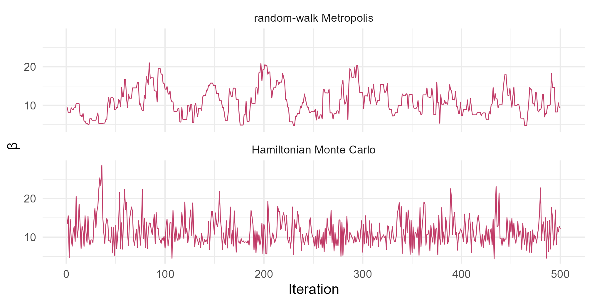

Module 5 · Lesson 8 of 13 Week 83 of 160 About 5–7 hours
MCMC in practice
Hamiltonian Monte Carlo, and how to trust a chain
Revisit the random-walk Metropolis algorithm on the flammability posterior, then build Hamiltonian Monte Carlo from scratch: the gradient of the log-posterior, the leapfrog integrator, and the energy check that decides acceptance. Compare the two samplers’ effective sample sizes, check convergence with the modern R-hat and bulk and tail ESS from the posterior package, see what a step size that’s too big does, and report Monte Carlo standard errors.
Module 4 built two MCMC samplers: random-walk Metropolis and Gibbs. Both work, and both have a weakness. Metropolis proposes blind steps, so in more than a few dimensions it either crawls or gets rejected. Gibbs needs every conditional posterior to have a formula. The sampler inside Stan, which the next lesson introduces, avoids both problems: Hamiltonian Monte Carlo (HMC) uses the gradient of the log-posterior to make long, well-aimed moves, and it’s accepted almost every time.
This lesson builds HMC by hand on the flammability posterior from Lesson 7, so that nothing in Stan is a black box. Then it turns to the practical question every MCMC user faces: how do you know the chain is telling the truth? You’ll use the diagnostics that Stan reports, from the posterior package.
Hamiltonian Monte Carlo is physics: a puck sliding on a frictionless bowl shaped like the posterior. Chemical engineers know their energy balances, so this one’s for us!
In this lesson you’ll:
- run random-walk Metropolis again, and measure its efficiency
- compute the gradient of a log-posterior
- build the leapfrog integrator and check that it conserves energy
- run Hamiltonian Monte Carlo, and compare it with Metropolis
- check convergence with R-hat and bulk and tail effective sample sizes
- spot divergent transitions, and report Monte Carlo standard errors
Metropolis, revisited
The setup code has Lesson 7’s log_post(), now for a single pair \theta = (\alpha, \beta), and Module 4’s metropolis(), which takes the number of steps, a start and a step SD for each parameter. For effective sample sizes, we’ll use posterior::ess_bulk(), a modern version of Module 4’s coda::effectiveSize().
Your turn. Run 5,000 Metropolis steps from near the mode, with step SDs of 0.5 for \alpha and 3 for \beta (about the posterior SDs), and find the acceptance rate and the effective sample size of the \beta draws.
The step SD for \beta is 3.
set.seed(5081)
run <- metropolis(5000, start = c(-0.3, 9.7), step = c(0.5, 3))
c(acceptance = run$acceptance, ess_beta = posterior::ess_bulk(run$draws[, 2]))60% accepted, and 5,000 draws worth 372 independent ones for \beta: an efficiency of 7%. With two parameters, that’s tolerable. With 50 parameters, the step size would have to shrink so much to keep any proposals accepted that the efficiency would fall to a fraction of a percent.
The gradient
HMC treats the parameters as the position of a particle, and the negative log-posterior as a landscape it slides on: low where the posterior is high. To simulate the slide, it needs the gradient, the direction and steepness of the slope at each point. For logistic regression, it has a simple form. With p_i = \text{logit}^{-1}(\alpha + \beta x_i),
\frac{\partial \log p}{\partial \alpha} = \sum_i (y_i - m_i p_i) - \frac{\alpha}{2.5^2}, \qquad \frac{\partial \log p}{\partial \beta} = \sum_i (y_i - m_i p_i)\, x_i - \frac{\beta}{25^2}.
The first part of each comes from the likelihood (observed minus expected ignitions), and the second from the normal priors.
Your turn. Write the gradient function, and evaluate it at \alpha = 0, \beta = 10.
The \beta component weights each residual by its concentration, x.
grad_log_post <- function(th) {
r <- y - m * plogis(th[1] + th[2] * x) # observed minus expected ignitions
c(sum(r) - th[1] / 2.5^2, sum(r * x) - th[2] / 25^2)
}
grad_log_post(c(0, 10))(-1.00, -0.04). At \alpha = 0, the model expects one more ignition in total than the 14 observed, so the slope says: lower \alpha. The \beta component is nearly 0: \beta = 10 is close to the best steepness. A quick check of a hand-written gradient is to compare it with a finite difference, (log_post(th + c(1e-6, 0)) - log_post(th)) / 1e-6. Stan computes gradients automatically, by automatic differentiation, so you’ll never have to write one by hand again.
The leapfrog integrator
Each HMC iteration gives the particle a random momentum, a kick in a random direction, and lets it slide for a while under the “force” of the gradient. Its total energy, the Hamiltonian, is the potential energy (the negative log-posterior) plus the kinetic energy of its momentum:
H(\theta, p) = -\log p(\theta \mid y) + \tfrac12 \sum_k M_k^{-1} p_k^2 .
The inverse mass M^{-1} scales each direction to the posterior’s width; here it’s about the posterior variances, 0.32 for \alpha and 10.7 for \beta. On a frictionless surface, energy is conserved, so a perfect simulation of the slide could be accepted every time. The leapfrog method simulates it in small time steps of length \varepsilon: half a step of momentum, a full step of position, half a step of momentum. It conserves energy very nearly, and the small error is fixed by a Metropolis test at the end: accept with probability \min(1, e^{H_0 - H_1}).
Your turn. Starting from the mode with a random momentum, slide for a fixed time of 2 with step sizes of 0.05, 0.2 and 0.8, and see how well each conserves energy. The setup code has leapfrog().
Compare with the energy at the start, with the starting momentum mom.
inv_mass <- c(0.32, 10.7)
H <- function(th, mom) -log_post(th) + sum(inv_mass * mom^2) / 2 # the total energy
set.seed(5082)
mom <- rnorm(2, 0, sqrt(1 / inv_mass)) # a random kick
th0 <- c(-0.3, 9.7)
sapply(c(0.05, 0.2, 0.8), function(eps) {
end <- leapfrog(th0, mom, eps, L = round(2 / eps), inv_mass)
H(end$th, end$mom) - H(th0, mom) # the energy error
})Energy errors of 0.0002, 0.003 and 0.07. The acceptance probability is e^{-\Delta H}, so even the largest step would be accepted 94% of the time. Smaller steps conserve energy better but need more gradient evaluations to travel the same distance: 40 for a step of 0.05, 10 for 0.2 and 2 for 0.8. Tuning \varepsilon is HMC’s balancing act, and Stan does it automatically during warmup, aiming for an average acceptance of about 80%.
Here is one HMC trajectory, on the posterior’s contours. Pushed by its random momentum and steered by the gradient, the particle travels in one smooth sweep, slowing down as it climbs the side of the bowl, and ends a long way from where it started, all within a single iteration. A random walk covers that distance only by luck, in many steps that keep doubling back:
ag <- seq(-2.2, 1.6, length.out = 120); bg <- seq(0, 26, length.out = 120)
gr <- expand.grid(a = ag, b = bg)
gr$lp <- apply(gr, 1, function(r) log_post(c(r[["a"]], r[["b"]])))
gr$z <- exp(gr$lp - max(gr$lp))
inv_mass <- c(0.32, 10.7)
mom <- c(-1.5, 0.5)
path <- data.frame(a = -0.3, b = 9.7); th <- c(-0.3, 9.7)
for (k in 1:20) { lf <- leapfrog(th, mom, 0.15, 1, inv_mass); th <- lf$th; mom <- lf$mom; path <- rbind(path, data.frame(a = th[1], b = th[2])) }
ggplot(gr, aes(x = a, y = b)) +
geom_contour(aes(z = z), breaks = c(0.05, 0.2, 0.5, 0.8), color = "grey70") +
geom_path(data = path, color = "#C2416C", linewidth = 0.9) +
geom_point(data = path, color = "#C2416C", size = 1.6) +
annotate("point", x = -0.3, y = 9.7, size = 3.2, color = "#3A1F35") +
annotate("text", x = -0.22, y = 9.0, label = "start", hjust = 0, size = 3.4, color = "#3A1F35") +
annotate("text", x = -0.85, y = 18.3, label = "one HMC iteration: 20 leapfrog steps", hjust = 0, size = 3.4, color = "#C2416C") +
labs(x = "α (log-odds at 1.4%)", y = "β (slope)") +
theme_minimal(base_size = 12)
Hamiltonian Monte Carlo
Each HMC iteration draws a fresh momentum, runs L leapfrog steps, and accepts or rejects the end point. The setup code’s hmc() does that.
Your turn. Run 1,000 HMC iterations with a step size of 0.25 and 8 leapfrog steps, and compare the acceptance rate and the effective sample size for \beta with Metropolis’s.
Use 8 leapfrog steps.
set.seed(5083)
run <- hmc(1000, start = c(-0.3, 9.7), eps = 0.25, L = 8)
c(acceptance = run$acceptance, ess_beta = posterior::ess_bulk(run$draws[, 2]), mean_beta = mean(run$draws[, 2]))99.7% accepted, and 1,000 draws worth 855: an efficiency of 85%, against Metropolis’s 7%. Each HMC iteration cost 8 gradient evaluations, so per unit of computing the gain is smaller, about a factor of 1.5 here. But that gap grows quickly with the number of parameters, which is why HMC can sample models with thousands of them. The posterior mean of \beta, 11.6, agrees with Lesson 7’s grid.
set.seed(5081)
rw <- metropolis(500, c(-0.3, 9.7), c(0.5, 3))$draws[, 2]
set.seed(5083)
hm <- hmc(500, c(-0.3, 9.7), 0.25, 8)$draws[, 2]
traces <- data.frame(iteration = rep(1:500, 2), beta = c(rw, hm),
sampler = factor(rep(c("random-walk Metropolis", "Hamiltonian Monte Carlo"), each = 500),
levels = c("random-walk Metropolis", "Hamiltonian Monte Carlo")))
ggplot(traces, aes(x = iteration, y = beta)) +
geom_line(color = "#C2416C", linewidth = 0.35) +
facet_wrap(~ sampler, ncol = 1) +
labs(x = "Iteration", y = "β") +
theme_minimal(base_size = 12)
Trusting a chain
Module 4 checked convergence with \hat R and the effective sample size from the coda package. Since then, the definitions have been improved, and the versions in the posterior package are what Stan and brms report:
- R-hat splits each chain in half and compares all the halves, after converting the draws to ranks, so it catches chains that drift, and it works for heavy-tailed posteriors. Use the draws only if it’s below 1.01.
- Bulk ESS is the effective sample size for the center of the distribution (means and medians). Tail ESS is the effective sample size for the 5% and 95% quantiles, which matter for intervals. Both should be at least about 400 (100 per chain, for 4 chains).
These functions take a matrix with one column per chain.
Your turn. Run 4 HMC chains of 600 iterations from four widely spread starting points, drop the first 100 of each as warmup, and compute R-hat, the bulk ESS and the tail ESS for \beta.
The tail ESS is posterior::ess_tail().
set.seed(5084)
starts <- list(c(-3, 2), c(3, 2), c(-3, 40), c(3, 40))
chains <- sapply(starts, function(s) hmc(600, s, eps = 0.25, L = 8)$draws[-(1:100), 2]) # 500 x 4
c(rhat = posterior::rhat(chains), ess_bulk = posterior::ess_bulk(chains), ess_tail = posterior::ess_tail(chains))R-hat is 1.001, the bulk ESS is 2,770 and the tail ESS 1,655, all from 2,000 kept draws. A bulk ESS above the number of draws isn’t a mistake: HMC’s draws can be negatively correlated, so that each one partly cancels the last one’s error. The four chains started at very different places and agree, so we can trust them.
When HMC goes wrong
HMC’s errors aren’t quiet. If the step size is too large for the posterior’s curvature somewhere, the leapfrog simulation becomes unstable, and the energy shoots off: the particle “flies off the bowl”. Stan calls that a divergent transition, and reports every one. Divergences mean the sampler couldn’t explore some region of the posterior, often a narrow one, so the draws may be biased. One divergence in a fit deserves attention. Many mean that the results can’t be trusted.
Your turn. Run 500 iterations with a step size of 1.5, six times too big, and count the acceptances and the divergent transitions, iterations where the energy error exceeded 1,000.
Use a step size of 1.5.
set.seed(5085)
run <- hmc(500, start = c(-0.3, 9.7), eps = 1.5, L = 8)
c(acceptance = run$acceptance, divergent = run$divergent)Only 26% accepted, and 12 divergent transitions. In Stan, the usual fix is to make the warmup tune the step size more cautiously, with a higher target acceptance (adapt_delta = 0.95 or 0.99), or better, to reparameterize the model so that its posterior has a friendlier shape. Lesson 11 shows the most famous case, the hierarchical model.
Monte Carlo standard errors
Every number computed from MCMC draws has a simulation error, on top of the posterior uncertainty. For a posterior mean, the Monte Carlo standard error (MCSE) is the posterior SD divided by the square root of the effective sample size, and posterior::mcse_mean() computes it. Report enough digits for the MCSE to be small in the last one, and no more.
Your turn. From the 1,000 HMC draws, compute the posterior mean of the LFL50, 1.4 - \alpha/\beta, and its MCSE.
The MCSE of a mean is posterior::mcse_mean().
set.seed(5083)
run <- hmc(1000, start = c(-0.3, 9.7), eps = 0.25, L = 8)
lfl50 <- 1.4 - run$draws[, 1] / run$draws[, 2]
c(mean = mean(lfl50), mcse = posterior::mcse_mean(lfl50), ess = posterior::ess_bulk(lfl50))A posterior mean of 1.4336% with an MCSE of 0.0013, from an ESS of 1,650. So the third decimal is uncertain, and the right way to report it is “1.43%”. The posterior SD, 0.05, is about 40 times larger than the MCSE: the uncertainty about the LFL50 comes almost entirely from the 30 tests, not from the simulation.
Challenge round
Challenge 1 · The same check for Metropolis. Run four Metropolis chains of 600 iterations from the same four starts, drop 100 from each, and compute R-hat and the bulk ESS for \beta. Would you trust them?
The sampler is metropolis().
set.seed(5084)
starts <- list(c(-3, 2), c(3, 2), c(-3, 40), c(3, 40))
chains <- sapply(starts, function(s) metropolis(600, s, step = c(0.5, 3))$draws[-(1:100), 2])
c(rhat = posterior::rhat(chains), ess_bulk = posterior::ess_bulk(chains))R-hat is 1.02 and the bulk ESS 124. Both fail the thresholds: R-hat above 1.01, and fewer than 400 effective draws. The chains need to run much longer. Per evaluation of the log-posterior or its gradient, HMC got 0.14 effective draws and Metropolis 0.05, almost three times fewer, and only HMC passed the checks.
Challenge 2 · Gibbs, revisited. Module 4’s Gibbs sampler alternates between the conditional posteriors. For Brightwater’s pellets from Lesson 6, with the prior p(\mu, \sigma^2) \propto 1/\sigma^2, they are: \sigma^2 \mid \mu, y \sim \sum(y_i - \mu)^2/\chi^2_n and \mu \mid \sigma^2, y \sim N(\bar y, \sigma^2/n). Run 5,000 iterations, drop 500, and compare the 95% interval for \mu with Lesson 6’s exact t-interval, 50.00 to 54.40 N.
\mu’s conditional variance is \sigma^2/n, with the current draw s2.
pellets <- read_csv("data/pellet_strength.csv", show_col_types = FALSE)
bright <- pellets$strength_N[pellets$supplier == "Brightwater"]
set.seed(5086)
n <- length(bright)
mu <- mean(bright)
out <- matrix(NA, 5000, 2)
for (g in 1:5000) {
s2 <- sum((bright - mu)^2) / rchisq(1, n) # sigma^2 given mu
mu <- rnorm(1, mean(bright), sqrt(s2 / n)) # mu given sigma^2
out[g, ] <- c(mu, sqrt(s2))
}
quantile(out[-(1:500), 1], c(0.025, 0.975))From 49.98 to 54.45 N, within Monte Carlo error of the exact 50.00 to 54.40. Gibbs works perfectly when the conditionals have formulas, as here. When they don’t, as in the flammability model, you need Metropolis steps inside it, or HMC.
Quick quiz
1. What does HMC use that random-walk Metropolis doesn’t?
The gradient lets the particle follow the posterior’s shape instead of stepping blindly.
2. Why does HMC accept almost every proposal?
With a well-tuned step size, \Delta H is small, so the acceptance probability is close to 1.
3. A fit reports R-hat = 1.04 for one parameter. What should you do?
The current guideline is R-hat below 1.01 for every parameter.
4. What’s the difference between bulk ESS and tail ESS?
A chain can estimate a mean well and a 95% interval badly. Check both.
5. Stan reports 37 divergent transitions. What do they suggest?
Try a higher adapt_delta, and if that doesn’t fix it, reparameterize the model.
6. A posterior mean is 1.4336 with an MCSE of 0.0013. How should you report it?
The third decimal is already uncertain, so report two.
Wrap-up
You’ve built the algorithm inside Stan, and you know how to check its work. Here’s what you’ve learned:
- Random-walk Metropolis is simple but inefficient: 5,000 draws worth 372 for the flammability model’s \beta.
- HMC gives the parameters momentum and slides them along the log-posterior’s gradient with the leapfrog integrator. Energy is nearly conserved, so nearly every proposal is accepted: 1,000 draws worth 855.
- Step size balances accuracy against cost. Too big, and the simulation diverges: 12 divergent transitions with a step of 1.5.
- Diagnostics from the posterior package: R-hat below 1.01, and bulk and tail ESS above about 400. Four HMC chains passed, and four Metropolis chains of the same length didn’t.
- Monte Carlo standard errors say how many digits to report: the LFL50 is 1.43%, with an MCSE of 0.0013.
TipPractice in RStudio (optional, about an hour)
Download flammability.csv into your project’s data-raw/ folder.
- The posterior package. Combine four chains into a draws object with
posterior::as_draws_array(), and tryposterior::summarise_draws(). Which columns are there? Compare them with this lesson’s numbers. - The number of leapfrog steps. With a step size of 0.25, run HMC with L = 1, 2, 4, 8, 16 and 32, and plot the ESS per gradient evaluation against L. Why does it fall off for large L? (The trajectory starts to turn back on itself. Stan’s NUTS, the “No-U-Turn Sampler”, stops each trajectory when that happens.)
- A unit mass. Rerun HMC with
inv_mass = c(1, 1). What happens to the acceptance rate and the ESS? Why does the mass matrix matter so much when the parameters have such different scales? - Check the gradient. Write a function that compares
grad_lp()with finite differences at 100 random points from the posterior. What’s the largest relative difference?
NoteKey words from this lesson
- Hamiltonian Monte Carlo (HMC)
- An MCMC method that gives the parameters a random momentum and simulates their motion on the negative log-posterior, using its gradient.
- Gradient
- The vector of partial derivatives of the log-posterior: the direction and steepness of its slope.
- Leapfrog integrator
- The numerical method HMC uses to simulate the motion: half a momentum step, a position step, half a momentum step.
- Hamiltonian
- The total energy, the negative log-posterior plus the kinetic energy. HMC accepts with probability \min(1, e^{H_0 - H_1}).
- Mass matrix
- Scales the momentum in each direction to match the posterior’s width. Stan estimates it during warmup.
- Divergent transition
- An HMC trajectory whose energy error blew up, a sign that the sampler can’t explore part of the posterior.
- R-hat (rank-normalized, split)
- The modern convergence diagnostic, comparing halves of all the chains. Values below 1.01 are acceptable.
- Bulk and tail ESS
- Effective sample sizes for the center and for the tails of the posterior.
- Monte Carlo standard error (MCSE)
- The simulation error of an MCMC estimate, such as the posterior SD over the square root of the ESS for a mean.
NoteWant to read more?
- Michael Betancourt, “A conceptual introduction to Hamiltonian Monte Carlo” (2017). Why HMC works in high dimensions, with pictures instead of proofs, by one of Stan’s developers.
- Aki Vehtari, Andrew Gelman, Daniel Simpson, Bob Carpenter and Paul-Christian Bürkner, “Rank-normalization, folding, and localization: an improved R-hat for assessing convergence of MCMC”, Bayesian Analysis (2021). The R-hat, bulk ESS and tail ESS used in this lesson, and the thresholds.
- Radford Neal, “MCMC using Hamiltonian dynamics”, chapter 5 of the Handbook of Markov Chain Monte Carlo (2011). The standard reference, including the leapfrog method and the choice of step size.
- Richard McElreath, Statistical Rethinking lectures, lecture 8, “Markov chain Monte Carlo”, with an animated HMC.